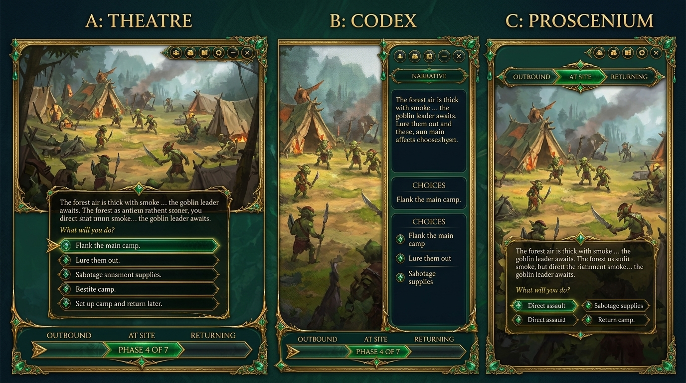

Stato del lavoro notturno — 2026-11-06/07
Generato
Quest run — 3 layout
A theatre · B codex · C proscenium — tuo rulingCompletato — account nuovo, generazione ripresa subito
Tutte e 4 le tavole sono pronte: run / rail / check / mobile — tutte sulla scheda quest-final.html per i ruling.
Dettaglio
- rail-3v — pannello laterale dei 6 bottoni (party/zaino/log)
- check-3v — skill-check/verdetto come transizione
- mobile-3v — mobile compagnia (roster+scheda+stash)
Job: scripts/hud-real/overnight-generate.sh — log .mw/specs/hud-real/kit/gen/overnight.logCassetto planner — port
Sessione reale cablata (questExpeditionSession + stash + DndContext + overlays). Volo medaglione non completa nel lab — gap aperto.
lab live